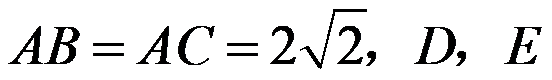
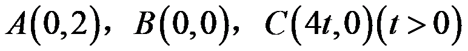

2019年北京市中考数学试题 · 数学解答题 第28题
28．在△ABC中， ，
， 分别是
分别是 两边的中点，如果上的所有点都在△ABC的内部或边上，则称为△ABC的中内弧．例如，下图中是△ABC的一条中内弧．
两边的中点，如果上的所有点都在△ABC的内部或边上，则称为△ABC的中内弧．例如，下图中是△ABC的一条中内弧．

（1）如图，在Rt△ABC中，

分别是 的中点．画出△ABC的最长的中内弧，并直接写出此时的长；
的中点．画出△ABC的最长的中内弧，并直接写出此时的长；
（2）在平面直角坐标系中，已知点

，在△ABC中，分别是的中点．①若 ，求△ABC的中内弧所在圆的圆心
，求△ABC的中内弧所在圆的圆心 的纵坐标的取值范围；
的纵坐标的取值范围；
②若在△ABC中存在一条中内弧，使得所在圆的圆心在△ABC的内部或边上，直接写出t的取值范围．